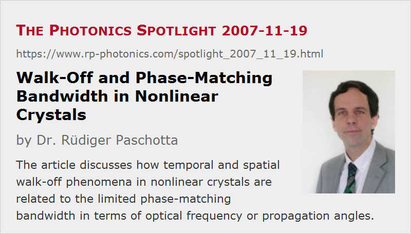

Walk-Off and Phase-Matching Bandwidth in Nonlinear Crystals
Posted on 2007-11-19 as a part of the Photonics Spotlight (available as e-mail newsletter!)
Permanent link: https://www.rp-photonics.com/spotlight_2007_11_19.html
Author: Dr. Rüdiger Paschotta, RP Photonics Consulting GmbH
Abstract: The article discusses how temporal and spatial walk-off phenomena in nonlinear crystals are related to the limited phase-matching bandwidth in terms of optical frequency or propagation angles.

Ref.: encyclopedia articles on temporal walk-off, spatial walk-off, phase-matching bandwidth
It is well known that many nonlinear interactions require phase matching to be efficient, that the phase-matching bandwidth is finite, and also that certain walk-off effects can occur in nonlinear crystal materials. However, it is perhaps less well known that and how walk-off and phase-matching bandwidth are related to each other.
Temporal Walk-Off
The temporal walk-off results from a mismatch of the frequency-dependent group velocities in a crystal, i.e. from a group velocity mismatch. It is quite obvious that this effect can degrade the conversion efficiency of nonlinear processes, if originally copropagating pulses at different wavelengths lose their temporal overlap during the passage through a crystal. It is interesting to realize that this effect is directly related to the finite phase-matching bandwidth: the frequency dependence of the phase mismatch is proportional to the group velocity mismatch. In fact, the loss of overlap in the time domain and the limited bandwidth are just two different descriptions of the same fundamental physical phenomenon.
The following thought may actually cast doubts on that claim. Consider a chirped ultrashort pulse participating in a nonlinear interaction. Its optical spectrum is broader than that of a transform-limited pulse with the same pulse duration. Therefore, it can be more strongly affected by the finite phase-matching bandwidth, while it might not appear to be more vulnerable to temporal walk-off. So we have a situation where in the time domain it is less apparent that the conversion efficiency can be reduced. But it is in fact not unusual that a certain phenomenon can be more easily understood in the frequency domain than in the time domain (or vice versa). In that particular case, in the time domain it is necessary to consider how nonlinear amplitude contributions from different sections in the crystal add up.
Spatial Walk-Off
Concerning spatial walk-off, there is a similar relation as above, but in that case to the angular phase-matching bandwidth. Spatial walk-off reduces the conversion efficiency for tightly focused laser beams, because the spatial overlap is then lost. Tightly focused beams also have a larger beam divergence, so that the problem is also apparent in the domain of propagation angles – which essentially is related to the spatial domain via a spatial Fourier transform.
Again, there is a case where the two domains at a first glance appear to lead to different consequences. Consider a beam with poor beam quality, having a large beam radius but nevertheless a relatively large beam divergence. The finite angular phase-matching bandwidth makes it clear that the conversion efficiency can suffer, while in the spatial domain it is not obvious. But again, the phenomenon can also be understood in the spatial domain – for example, by examining in detail a numerical simulation based on coupled differential equations for amplitudes with an x and y dependence.
This article is a posting of the Photonics Spotlight, authored by Dr. Rüdiger Paschotta. You may link to this page and cite it, because its location is permanent. See also the RP Photonics Encyclopedia.
Note that you can also receive the articles in the form of a newsletter or with an RSS feed.
Questions and Comments from Users
Here you can submit questions and comments. As far as they get accepted by the author, they will appear above this paragraph together with the author’s answer. The author will decide on acceptance based on certain criteria. Essentially, the issue must be of sufficiently broad interest.
Please do not enter personal data here; we would otherwise delete it soon. (See also our privacy declaration.) If you wish to receive personal feedback or consultancy from the author, please contact him e.g. via e-mail.
By submitting the information, you give your consent to the potential publication of your inputs on our website according to our rules. (If you later retract your consent, we will delete those inputs.) As your inputs are first reviewed by the author, they may be published with some delay.
|  |
If you like this page, please share the link with your friends and colleagues, e.g. via social media:
These sharing buttons are implemented in a privacy-friendly way!